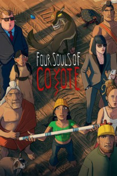

Also known as:Kojot négy lelke (original title)
Country:Hungary, 106 minutes
Spoken languages:English, Hungarian
Genres:Animation, Drama, Adventure, Action
Director(s):Áron Gauder
Writer(s):Áron Gauder, Géza Bereményi
Video Codec:Unknown
Number: 5617

Certification:
Storyline:
This film is a tribute to a humiliated and destroyed nation. "As Long as the Grass Grows" is an alternative, ancient and humble creation story, where man is not the crown of the creation, but the weakest of all creatures. The film takes us back to the beginning of time, where Old Man begins to create the world out of a handful of mud. Everything he creates is new and nameless, and affects the rest of the world. Even feelings and desires are unknown and when they emerge, the world becomes more and more complicated.
Cast:
János Papp (voice of Öreg Teremtő), Péter Bozsó (voice of Kojot), Tamás Széles (voice of 16-50 éves Hoksila / Sanders), Pikali Gerda (voice of 16-50 éves Whicincala / Mataoka), Bálint Vida (voice of 2-9 éves Hoksila)
Medium: Media file,
Location: D:\Personal\Sarah Disk\Documents\Curse\Minecraft\Install\assets\virtual\legacy\sounds\step\grass4.ogg
Loaned: No
Aspect ratio: Unknown